2026 초등인강 TOP 5 비용 비교｜약정·학습기·무료체험 체크리스트
엘리하이로부터 제품과 원고료를 제공받아 체험 후 작성하였습니다
초등인강을 고를 때 월 요금만 비교하면 실제 부담을 놓치기 쉽습니다. 같은 월 납부액이라도 약정 기간, 전용 학습기 비용, 추가 교재, 중도 해지 조건에 따라 총비용이 달라지기 때문입니다. 이 글은 엘리하이·밀크T·아이스크림 홈런·웅진 스마트올·온리원 초등의 가입 전 비용 점검과 무료체험 확인 사항을 중심으로 정리했습니다.
브랜드별 강의 구성과 학습관리 차이는 초등인강 학습 방식 비교 글에서 따로 확인할 수 있습니다.
1. 초등인강 월 학습비 비교 전 알아둘 점
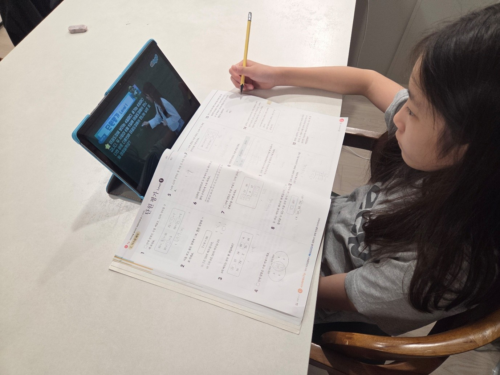
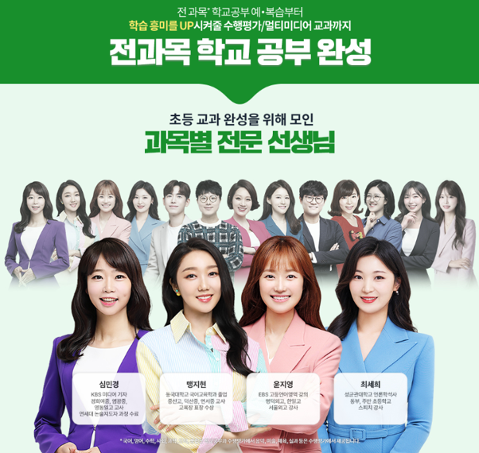
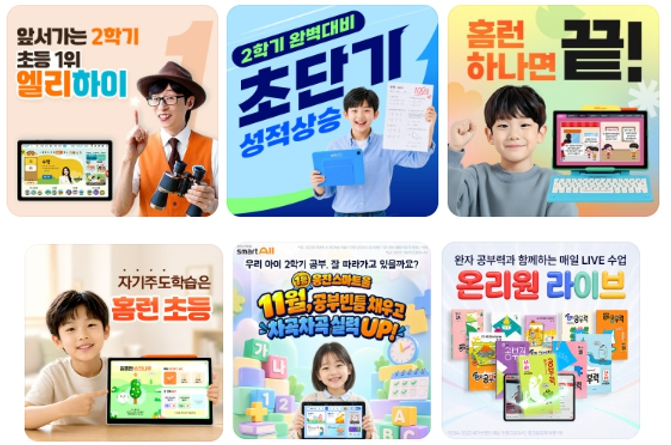
아래 금액은 기존에 수집한 2026년 11월 참고 자료로, 같은 약정·기기 조건의 공식 견적을 대조한 표가 아닙니다. 실제 신청 전에 반드시 각 브랜드의 최신 상담 견적을 확인하세요.
| 브랜드 | 기존 참고 월 금액 | 계약 전 확인할 내용 |
|---|---|---|
| 엘리하이 | 119,000원 (프라임 종합반 24개월 기준) | 약정 기간, 학습기 제공·반납 |
| 밀크T 초등 | 119,000원 | 상품별 학습 범위와 납부액 |
| 아이스크림 홈런 | 118,000원 | 학습기·약정·추가 교재 |
| 웅진 스마트올 | 79,000원 | 상품 구성과 적용 조건 |
| 온리원 초등 | 상담 확인 필요 | 상품별 약정·기기 비용 |
※ 가격의 현재 유효성은 별도로 검증되지 않았습니다. 확정 가격이나 동일 조건 순위로 해석하면 안 됩니다.
2. 월 요금보다 중요한 총 납부액 계산
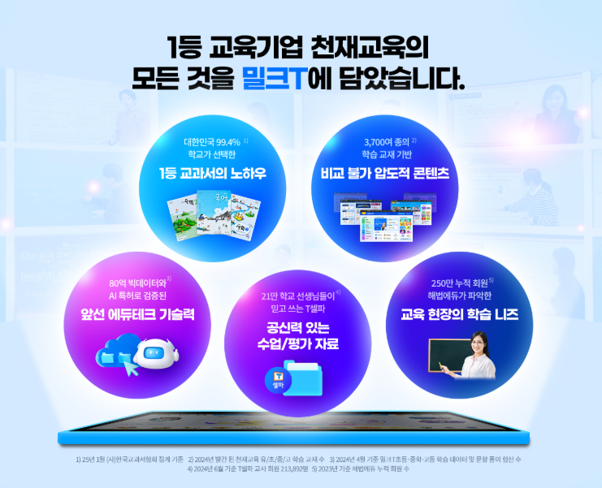
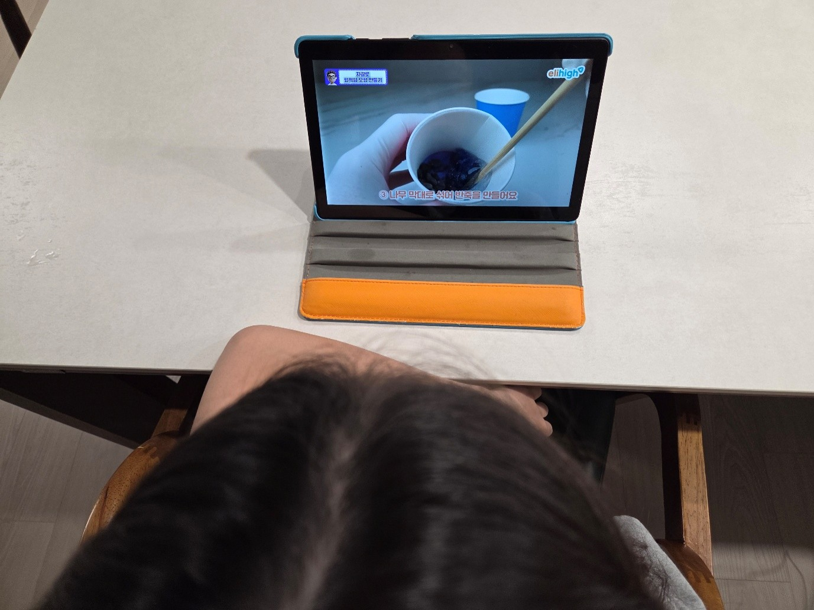
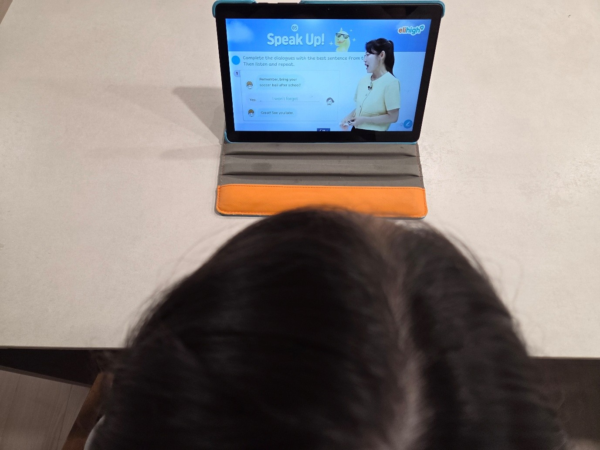
기본 계산은 월 납부액 × 약정 개월 수입니다. 여기에 별도 교재비, 초기 비용, 학습기 비용이 있다면 더하고, 할인·환급은 조건을 확인한 뒤 반영해야 합니다.
| 가정한 월 요금 | 12개월 총액 | 24개월 총액 |
|---|---|---|
| 79,000원 | 948,000원 | 1,896,000원 |
| 118,000원 | 1,416,000원 | 2,832,000원 |
| 119,000원 | 1,428,000원 | 2,856,000원 |
이 표는 단순 산술 예시이며 실제 각 브랜드가 12개월·24개월 상품을 위 가격으로 판매한다는 뜻은 아닙니다.
3. 학습기와 중도 해지 조건 확인하기
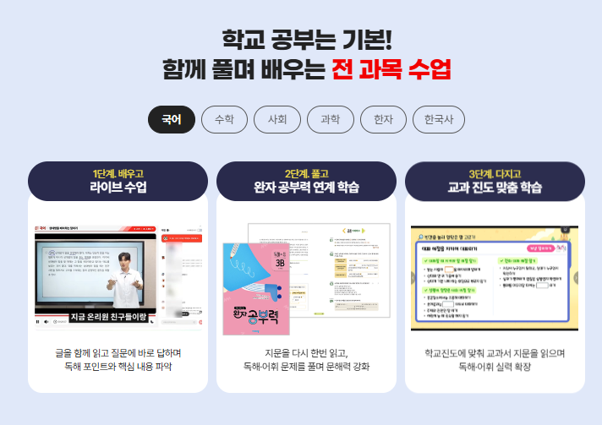
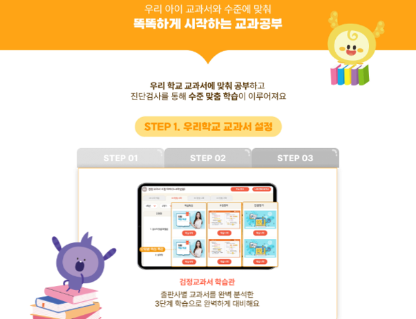
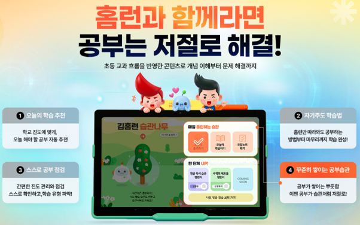
- 전용 학습기는 구매인지 대여인지, 계약 종료 시 반납해야 하는지
- 약정 중 해지하면 위약금이나 할인 반환금이 발생하는지
- 학습기 파손·분실 시 비용이 별도로 청구되는지
- 약정 종료 뒤 자동 연장 또는 요금 변경이 있는지
- 추가 문제집·교재 배송비가 포함되는지
같은 월 요금이라도 위 항목에 따라 실제 부담이 달라집니다. 상담 시 말로만 확인하지 말고 계약서나 약관에 기재된 내용을 확인하세요.
4. 무료체험 기간에 점검할 다섯 가지
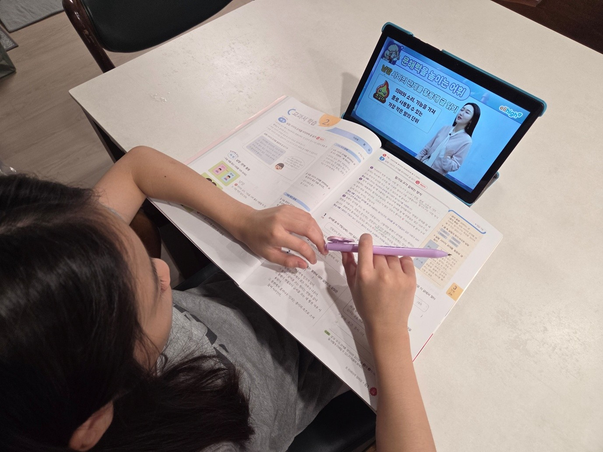
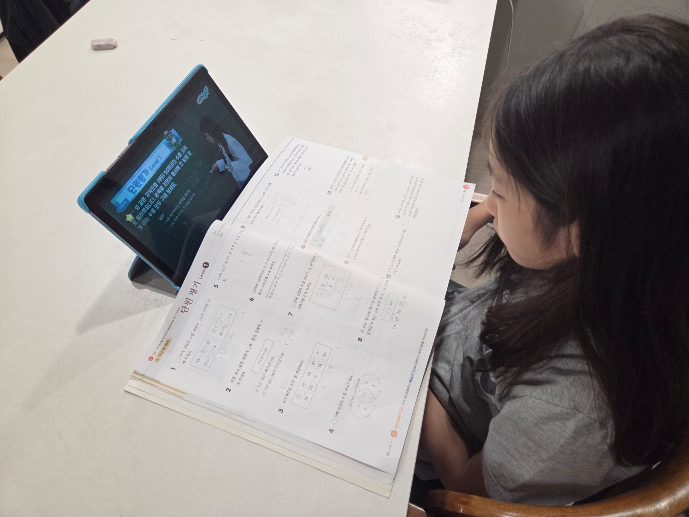
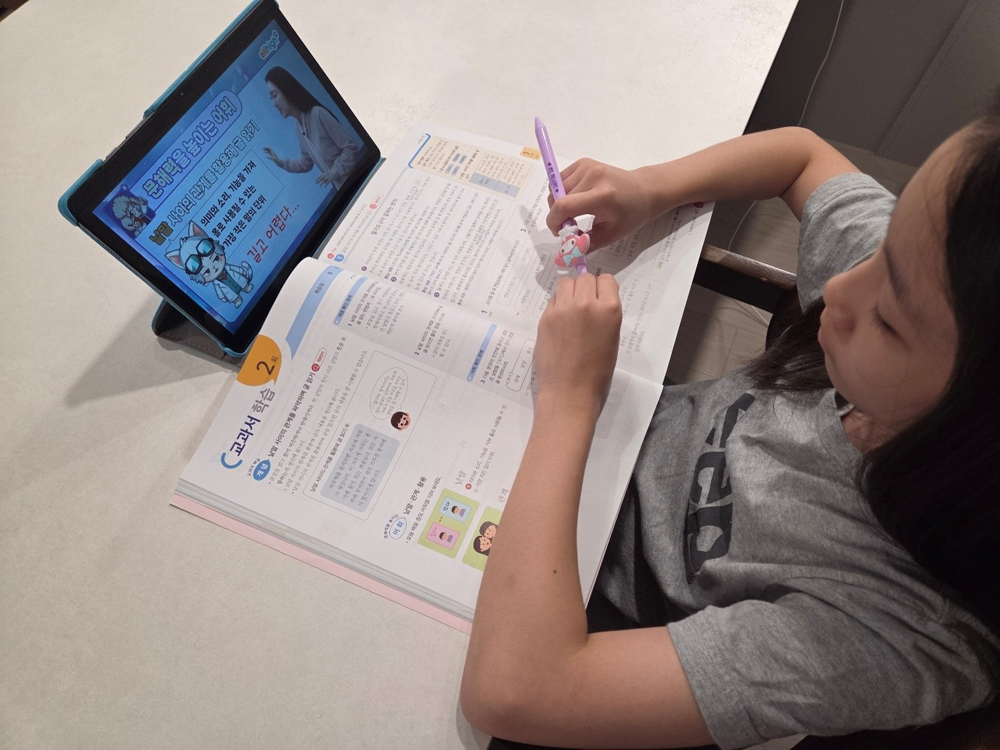
- 아이가 설명을 이해하고 스스로 문제를 풀 수 있는지
- 학교 진도와 수준에 맞는 강의를 찾기 쉬운지
- 오답 복습과 학습 진도 확인이 편한지
- 실제 선생님 상담이 필요한 경우 어떤 방식으로 제공되는지
- 체험 종료 후 유료 전환 조건과 기기 반납 조건이 무엇인지
엘리하이는 10일 무료체험을 안내하고 있습니다. 다른 브랜드의 체험 기간과 조건은 신청 시점의 공식 안내를 확인하세요.
5. 학년별로 비용 대비 활용도를 판단하는 기준
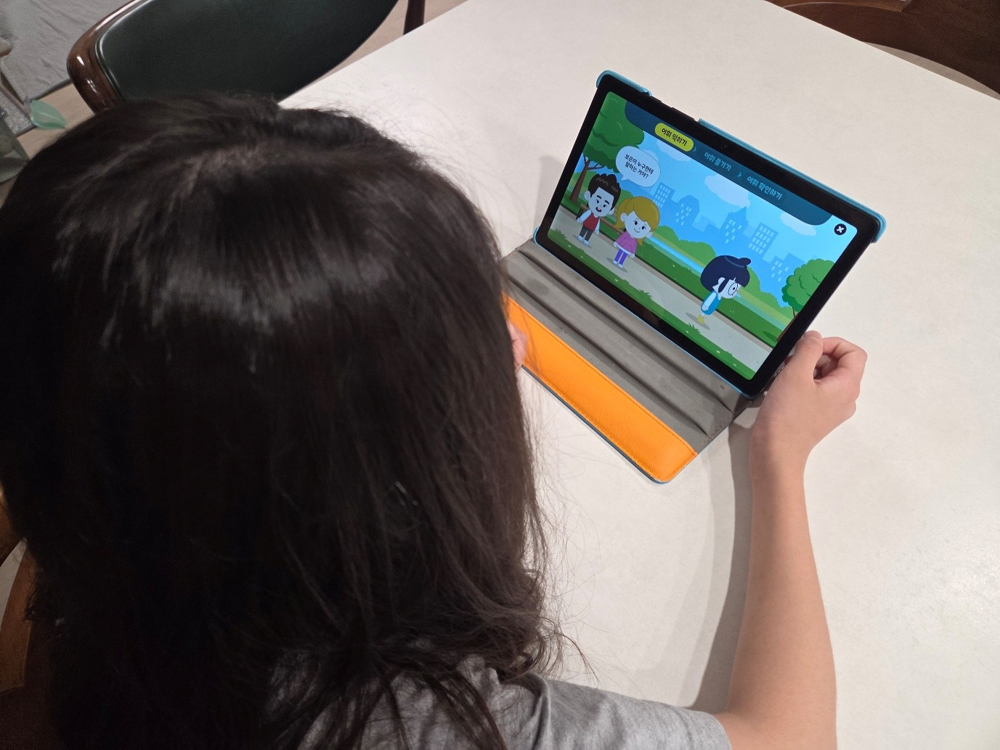
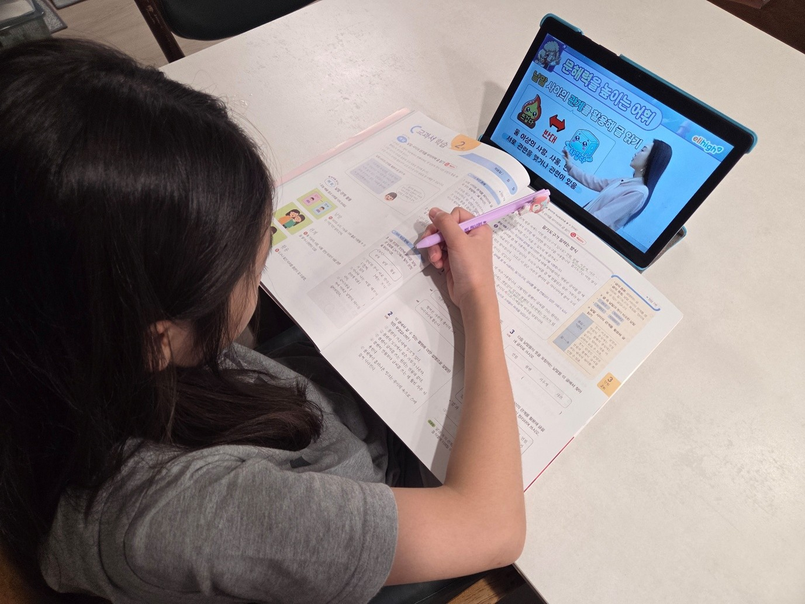
초1~2: 학습 습관
학습량이 많아도 매일 활용하지 않으면 비용 대비 효율이 떨어집니다. 짧은 시간에 꾸준히 학습할 수 있는지 먼저 살펴보세요.
초3~4: 전 과목 활용
사회·과학까지 과목이 늘어나는 시기입니다. 월 요금에 포함된 강의 범위와 필요한 과목의 활용도를 비교해 보세요.
초5~6: 심화·중등 연계
수학 심화, 영어 문법·독해와 중학교 대비 강좌를 추가 비용 없이 들을 수 있는지 확인하세요.
6. 가입 상담에서 바로 물어볼 질문
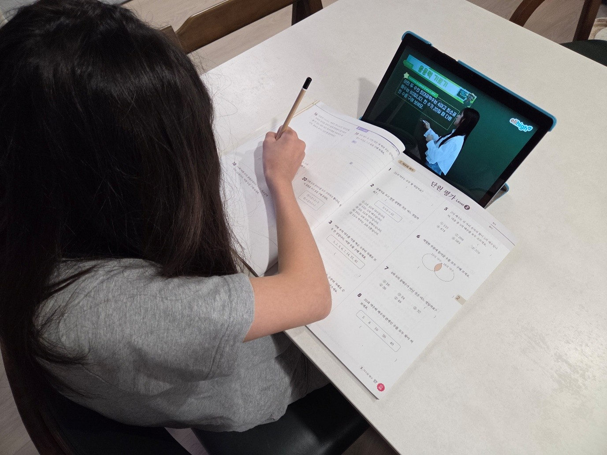
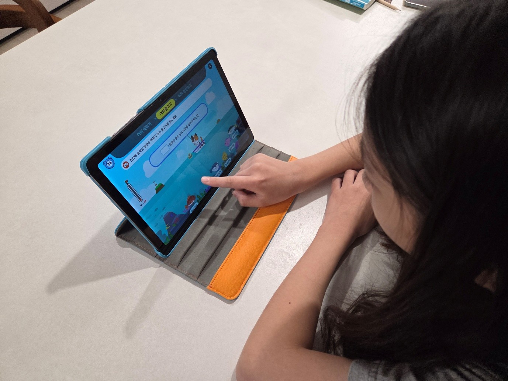
- 오늘 기준 월 납부액과 총 약정 금액은 얼마인가요?
- 학습기·교재·배송비가 모두 포함되어 있나요?
- 중도 해지 시 예상 비용은 어떻게 계산하나요?
- 무료체험 후 별도 신청 없이 결제되나요?
- 담임 상담과 추가 학습 콘텐츠에 별도 요금이 있나요?
7. 결론｜최저가보다 실제 사용 조건 비교
초등인강은 월 납부액만으로 우열을 판단하기 어렵습니다. 우리 아이가 필요한 과목을 꾸준히 활용할 수 있는지 확인하고, 약정 총액과 기기·해지 조건을 함께 비교하는 편이 합리적입니다. 엘리하이는 전 과목 강의와 실제 선생님의 1:1 학습관리, 10일 무료체험 등을 확인해볼 수 있습니다.
학습 방식이 궁금하다면 브랜드별 강의·관리 비교도 함께 읽어보세요.